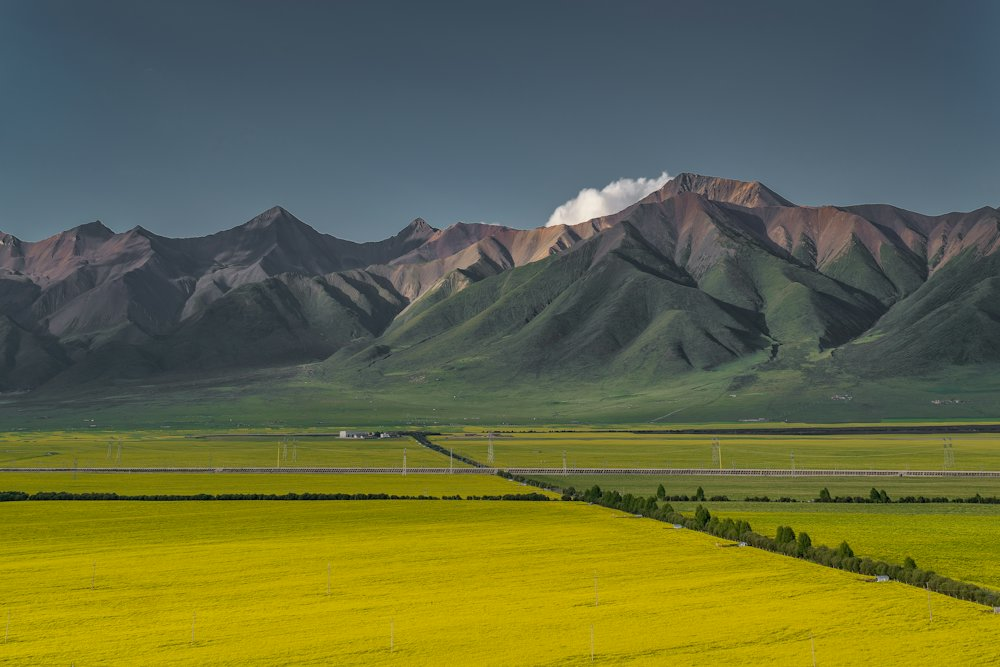

自然历年规律西南
罗平油菜花海
Luoping Rapeseed Bloom · 云南 · 曲靖
最佳时间
2 – 3 月盛花期（春节后进入最佳观赏期）
花期随海拔与气温略有早晚，2 月中下旬至 3 月中旬最稳。
80 万亩金色花海：金鸡峰丛日出晨雾与螺丝田的螺旋花带是两张王牌。
不能错过
- 金鸡峰丛观景台看日出，晨雾+花海层次最好
- 牛街螺丝田的梯状花带适合下午侧光
当地美食
五色花米饭布依族植物染色糯米，花田应景
全锅羊汤锅罗平黑山羊一锅鲜，花海冬日暖身
蜂蜜Nian糕油菜花蜜入甜品，本地蜂农直供
布依烟熏肉柴火熏腊，切片即食
旅人提醒
- 花田蜜蜂多，怕蜇者保持距离
- 节庆期间县城住宿紧张，早订房
月度热力与气温
15°
1
17°
2
21°
3
25°
4
26°
5
26°
6
25°
7
25°
8
24°
9
21°
10
18°
11
16°
12
适宜度（柱高，5=最佳）依据活动窗口与气候整理；气温为月均高温近似值（°C），仅供规划参考，出行前请查当地预报。
编辑核实笔记 · 整理自罗平县历年花情公告，非亲历；花期以当年为准。
预订 / 官网
官方页面：查看官网 / 官方信息 ↗ · 票价与预约以官网为准
联盟链接含占位 tracking id（Booking/Klook/Trip.com），上线替换为真实 ID 即生效；均带 utm 参数与点击统计。